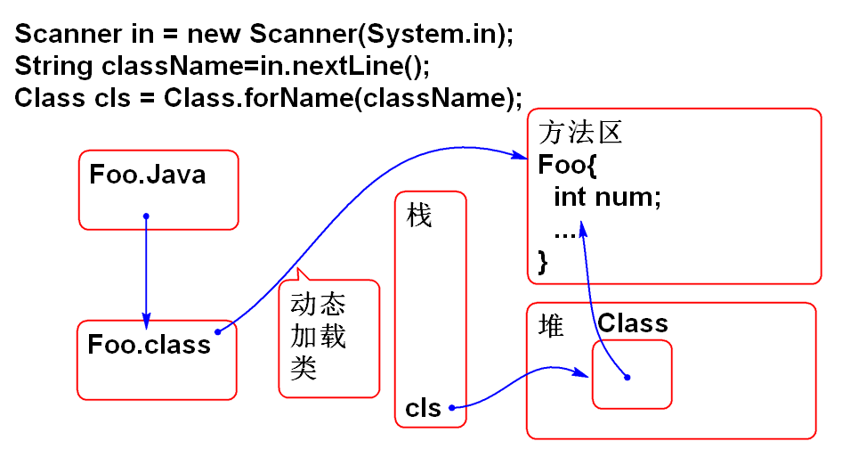
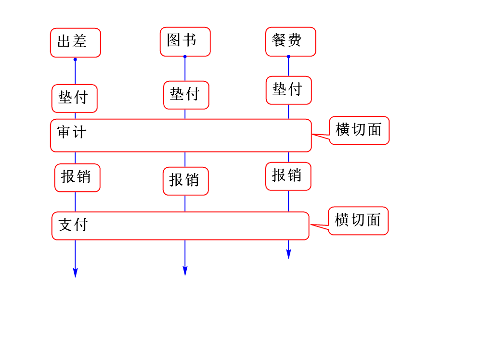
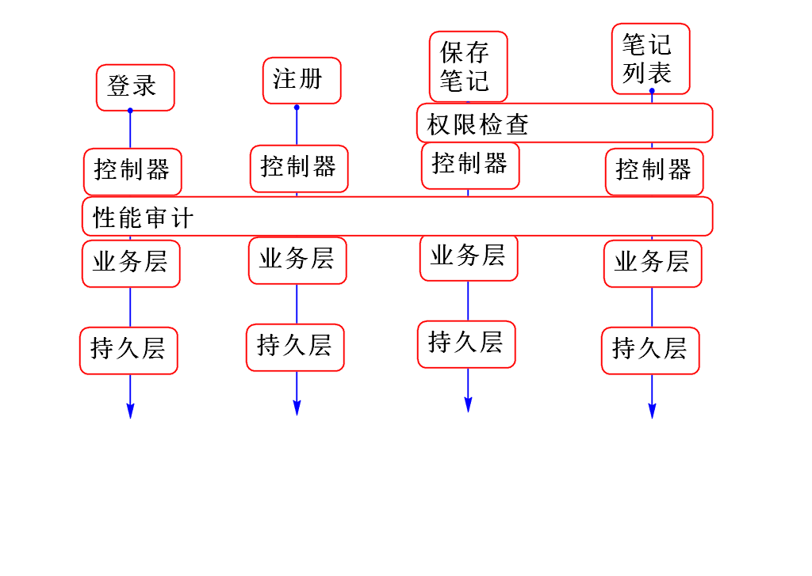

Java提供的API，其功能是动态加载类，动态创建对象，动态调用方法，动态访问属性等。
静态： 约定执行流程，在运行期间按照固定规则执行。
案例：
Foo foo = new Foo();
String s = foo.hello();
System.out.println(s);
说明：编译以后，执行时候按照固定规则执行。
动态：在运行期间动态加载类，动态创建对象，动态执行方法
说明：在程序运行之前不知道类名，方法名！
功能
语法：
Class cls=Class.forName(类名);
理解

实验素材：
package cn.tedu.demo;
public class Foo {
public Foo() {
}
public void who(){
System.out.println("Hi");
}
private void test(int n){
System.out.println(n);
}
private void test(String s, int n){
System.out.println(s+n);
}
}
案例：
public static void main(String[] args)
throws Exception{
Scanner in = new Scanner(System.in);
System.out.print("输入类名:");
String className=in.nextLine();
//动态加载类：
//在类名错误时候出现：Class没有找到
Class cls = Class.forName(className);
System.out.println(cls);
}
程序执行之前不知道类名，在运行期间动态获取类名，动态加载类并且创建对象。
语法：
Object obj = cls.newInstance();
动态调用对象的无参数构造器创建对象，被调用的类必须有无参数构造器，如果没有将抛出异常，反射API也提供了调用有参数构造器的方法，但是不常用。
案例：
public static void main(String[] args)
throws Exception{
Scanner in = new Scanner(System.in);
System.out.print("输入类名:");
String className=in.nextLine();
//动态加载类：
//在类名错误时候出现：Class没有找到
Class cls = Class.forName(className);
//如果没有无参数构造器，将抛出异常
Object obj = cls.newInstance();
System.out.println(cls);
System.out.println(obj);
}
找到方法信息
Method[] methods=cls.getDeclaredMethods();
返回一个类的全部方法信息，只包含当前类的方法信息。返回值的数组，每个元素代表一个方法详细信息
案例：
public static void main(String[] args)
throws Exception{
Scanner in = new Scanner(System.in);
System.out.print("输入类名：");
String className = in.nextLine();
Class cls = Class.forName(className);
//找类中全部的方法信息
Method[] methods =
cls.getDeclaredMethods();
for (Method method : methods) {
System.out.println(method);
}
}
找到全部公有方法信息（含继承的方法）：
Method[] methods = cls.getMethods();
案例：
public static void main(String[] args)
throws Exception{
Scanner in = new Scanner(System.in);
System.out.print("输入类名：");
String className = in.nextLine();
Class cls = Class.forName(className);
//找类中全部的方法信息
Method[] methods = cls.getMethods();
for (Method method : methods) {
System.out.println(method);
}
}
找到一个特定的方法信息：
Method method = cls.getDeclaredMethod(
方法名, 参数类型列表);
案例：
public static void main(String[] args)
throws Exception{
Scanner in = new Scanner(System.in);
System.out.print("输入类名：");
String className = in.nextLine();
Class cls = Class.forName(className);
//利用方法签名找到一个方法信息
String name = "test";
//int.class 表示int类型
Class[] types =
{String.class,int.class};
Method m = cls.getDeclaredMethod(
name, types);
System.out.println(m);
}
方法详细信息: Method 对象包含全部的方法信息。
执行方法
Object obj=method.invoke(对象, 传递的参数...)
invoke 调用，执行一个方法 注意： 对象 和 method 必须是相关的，对象的类型上一定存在指定的方法。如果没有就会抛出异常，参数必须匹配，如果不匹配也会出现异常。
public static void main(String[] args)
throws Exception{
Scanner in = new Scanner(System.in);
System.out.print("输入类名：");
String className = in.nextLine();
//加载类
Class cls = Class.forName(className);
//输入方法名
System.out.print("输入方法名：");
String name = in.nextLine();
//查找方法
Class[] types = {};
Method method =
cls.getDeclaredMethod(name,types);
//执行方法
//String obj = "ABC";
Object obj = cls.newInstance();
Object val = method.invoke(obj);
System.out.println(val);
}
这个案例可以执行一个类实例的无参数方法。
案例：
public static void main(String[] args)
throws Exception {
Scanner in=new Scanner(System.in);
System.out.print("输入类名：");
String className = in.nextLine();
//动态加载类
Class cls=Class.forName(className);
//动态查找方法
Method[] methods =
cls.getDeclaredMethods();
//遍历每个方法，查找方法名是以test为开头
Object obj = cls.newInstance();
for (Method method : methods) {
String name=method.getName();
//获取方法的参数类型列表
Class[] types=
method.getParameterTypes();
System.out.println(
name+":"+Arrays.toString(types));
//检查参数类型列表长度
if(types.length!=0){
continue;
}
if(name.startsWith("test")){
System.out.print(name+":");
//找到了test开头方法
//执行找到的方法
method.invoke(obj);
}
}
}
语法:
Field[] dields = cls.getDeclaredFields();
返回一个类中全部的方法信息
案例：
public static void main(String[] args)
throws Exception{
Scanner in = new Scanner(System.in);
System.out.print("输入类：");
String className = in.nextLine();
Class cls = Class.forName(className);
//动态获取一个类中定义的属性信息
Field[] fields =
cls.getDeclaredFields();
for (Field field : fields) {
System.out.println(field);
}
}
读取对象的属性
Objecr val = field.get(对象);
修修改对象的属性：
field.set(对象, 属性值)
素材：
public class Goo {
private int num = 5;
public Goo() {
}
}
案例：
/**
* 动态读写属性
*/
public class Demo06 {
public static void main(String[] args)
throws Exception {
Scanner in=new Scanner(System.in);
System.out.print("输入类名：");
String className = in.nextLine();
//动态加载类
Class cls = Class.forName(className);
//动态获取属性信息
System.out.print("属性名称：");
String name = in.nextLine();
//查找属性: 在方法区中的类信息里查找属性信息
Field field=cls.getDeclaredField(name);
//读取属性
// obj 参数是包含属性值的对象
Object obj = cls.newInstance();
field.setAccessible(true);
field.set(obj, 100);
Object val = field.get(obj);
System.out.println(val);
}
}
其中：field.setAccessible(true) 用于打开不可见属性的访问权限，可以打破封装访问不可以见属性。
当设计一个操作，在操作时候不知道类名，方法名，属性名时候，必须使用反射实现！！
反之，尽量不要使用反射，反射性“稍慢”
业务需求：动态执行一个类中全部使用 @Test 标记的方法
分析：不知道类名，不知道方法名，必须使用反射！
如何写注解：
@Retention(RetentionPolicy.RUNTIME)
public @interface Test {
}
RetentionPolicy.RUNTIME 表示这个注解有效范围保留到软件运行期间，如果不写默认情况是编辑就擦除。
案例：
public static void main(String[] args)
throws Exception{
Scanner in = new Scanner(System.in);
System.out.print("输入类名：");
String className=in.nextLine();
Class cls = Class.forName(className);
//动态查找方法
Method[] methods =
cls.getDeclaredMethods();
Object obj = cls.newInstance();
for(Method method: methods){
//查找注解
//查找 方法上是否包含@Test
//如果包含注解就返回一个注解对象，
//否则返回null
Test ann= method
.getAnnotation(Test.class);
System.out.println(ann);
if(ann != null){
method.invoke(obj);
}
}
}
其中：method.getAnnotation(Test.class) 方法用于在方法上查询特定的注解。
常见面试题目
注解是如何工作的，原理是什么
答：在运行期间利用反射API解析并且处理注解。
案例：
public class ApplicationContext {
private Map<String, Object> beans;
public ApplicationContext(String xml)
throws Exception{
//解析XML，获取类名，根据类名创建Bean
beans=new HashMap<String, Object>();
SAXReader reader = new SAXReader();
//从包中读取流
InputStream in=this.getClass()
.getClassLoader()
.getResourceAsStream(xml);
Document doc= reader.read(in);
// 根元素 <beans> 子元素<bean id class>
Element root = doc.getRootElement();
//获取全部子元素 bean
List<Element> list=root.elements();
//遍历每个bean，每个bean创建一个对象
for (Element bean : list) {
//获取bean的ID 和 class
String id=bean.attributeValue("id");
String className=
bean.attributeValue("class");
System.out.println(id+","+className);
//利用反射API创建对象
Class cls=Class.forName(className);
Object obj=cls.newInstance();
//缓存到 map 中
beans.put(id, obj);
}
}
public Object getBean(String id){
//根据类名返回Bean对象
return beans.get(id);
}
}
配置文件 spring.xml：
<beans>
<bean id="goo"
class="cn.tedu.demo.Goo"/>
<bean id="date"
class="java.util.Date"/>
</beans>
测试：
public static void main(String[] args)
throws Exception{
ApplicationContext ctx =
new ApplicationContext(
"spring.xml");
Date d = (Date)ctx.getBean("date");
System.out.println(d);
Goo goo = (Goo)ctx.getBean("goo");
System.out.println(goo);
}
面向切面编程
切面就是业务过程中的横截面：

软件中也有很多横切编程需求：

** Spring 利用动态代理API（反射API的部分）将 切面程序 织入（插入）现有程序中。 **
Spring提供了AOP底层是 AspectJ，使用时候需要引入 AspectJ
<!-- AOP -->
<dependency>
<groupId>org.aspectj</groupId>
<artifactId>aspectjweaver</artifactId>
<version>1.8.8</version>
</dependency>
<dependency>
<groupId>org.aspectj</groupId>
<artifactId>aspectjtools</artifactId>
<version>1.8.8</version>
</dependency>
<dependency>
<groupId>org.aspectj</groupId>
<artifactId>aspectjrt</artifactId>
<version>1.8.8</version>
</dependency>
创建切面组件
@Aspect
@Component
public class DemoAspect {
@Before("bean(userService)")
public void Hello(){
System.out.println("Hello World!");
String s=null;
s.length();
}
}
配置 spring-aop.xml：
<!-- 扫描到控制器组件 -->
<context:component-scan
base-package="cn.tedu.note.aop"/>
<!-- 用于支持注解版的AOP @Aspect -->
<aop:aspectj-autoproxy/>
测试:...